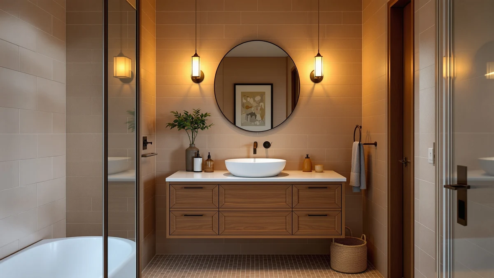

Best Vanity Installation Guide (2026) | Best Bathroom Vanities


Things to Know Before You Buy
- Measure the rough-in first. Note where the drain and supply valves sit relative to the floor and the wall before you buy. A new vanity that fights the existing plumbing turns a three-hour job into a weekend.
- Shut off the water and test it. Close the supply valves, open the faucet, and confirm the flow stops. A dribble that you ignore now soaks the cabinet base later.
- Level beats tight. Shim the cabinet until a bubble level reads true front to back and side to side. A vanity that looks straight but sits off level lets the sink drain slowly and the top crack at the seams.
- Floating vanities need real anchoring. A wall-mounted cabinet has to bolt into studs or solid blocking, not drywall anchors alone. The hardware that ships in the box is rarely enough on its own.
- Seal where water lands. Run a thin bead of silicone along the backsplash and around the basin. This is the cheapest step and the one people skip most.
Swapping a tired bathroom cabinet for a new one is a solid weekend project, and you can do it without flooding the floor or stripping a drain fitting. Most of it comes down to a level, a wrench, a drill, and a caulk gun. The work splits into three honest stages: getting the old vanity out, setting the new one straight and solid, and connecting the plumbing so nothing leaks.
The trouble is rarely the lifting. People get a cabinet that does not match the rough-in plumbing, or they tighten the cabinet to the wall before checking that it sits level, then wonder why the countertop seam opens up a month later. You avoid both by measuring twice and dry-fitting once.
We wrote this for a standard freestanding vanity, the kind most homes already have, and flagged the extra steps a double-sink or wall-mounted floating model adds. If your project also moves the drain or supply lines inside the wall, that crosses into permit territory, and you should read the section on when to call a plumber before you start.
What You Need to Know
Before you start unscrewing things, you need a clear picture of what sits behind your current cabinet. Two supply lines feed the faucet, one hot and one cold, each with its own shutoff valve. One drain line carries water away through a P-trap. Those three connection points decide whether your new vanity drops in or fights you for hours.
Grab a tape measure and write down four numbers. Measure from the finished floor to the center of the drain, from the floor to each supply valve, and from the side wall to the drain. Then measure the open wall space the cabinet will fill. A 48-inch vanity needs a hair more than 48 inches of clear wall, plus room for the door to swing if there is one nearby.
You also want to know what the cabinet anchors into. Run a stud finder across the wall behind the old vanity and mark the studs with painter's tape. A freestanding cabinet screws into at least one stud through its back rail. A floating vanity carries all its weight on the wall, so it needs two studs or solid blocking, and drywall alone will not hold it.
Gather your tools in one spot: an adjustable wrench, channel-lock pliers, a cordless drill, a four-foot level, a stud finder, a utility knife, shims, plumber's tape, and silicone caulk. Keep a bucket and old towels under the work area. Even with the valves closed, the trap holds a cup of water that spills the moment you loosen it.
Types and Categories
The vanity you pick changes the installation more than any other choice, so it helps to sort the common types by how much work each one asks of you.
Freestanding single-sink vanities are the easiest. The cabinet rests on the floor, screws to one stud through the back rail, and uses the drain and valves already in your wall. The 48-inch DELUXE LIVING model and the 30-inch IFBUY arched vanity both fall in this group, and either suits a first-timer.
Double-sink vanities add a second set of plumbing connections. A 72-inch unit like the DKB Alenza gives two people their own basin, but you now have two drains and four supply lines to align. If your wall has only one rough-in, you face running new lines, which pushes the job toward a plumber. A 48-inch double like the eclife squeezes two sinks into a tighter wall, so confirm both drains clear the cabinet's internal frame before you commit.
Floating, or wall-mounted, vanities hang off the wall with nothing touching the floor. They look clean and make a small room read larger, and they are the hardest to install well. You locate studs, set a mounting cleat dead level, and bolt the cabinet through it. Get the anchoring wrong and the cabinet sags or pulls free under the weight of a stone top. Plan the drain too, because a standard floor drain may now sit below the cabinet and need a wall-mounted rough-in instead.
How to Choose
Choosing the right cabinet is half the battle, because the easiest install is the one where the vanity matches the bathroom you already have. Start with the rough-in numbers you measured earlier and shop to them, not the other way around.
Match the size to the wall first. Leave a few inches of clearance on each side so the cabinet slides in without scraping, and check that drawers and doors clear the toilet, the tub, and any trim. A vanity that technically fits but blocks a drawer from opening fails the moment you live with it.
Decide between a pre-assembled cabinet and a ready-to-assemble (RTA) one. Pre-assembled units arrive built and often ship with the top and sink attached, which saves an hour but weighs more and ships in a larger box. RTA vanities cost less and fit through narrow doorways in flat packs, but you build the carcass before you can install it. If you want the trade-offs in detail, our RTA versus pre-assembled comparison breaks down both.
Weigh how the cabinet meets the plumbing. Some backs come solid and need a cutout for the drain and valves, while others ship open or pre-cut. A solid back gives you a sturdier cabinet but means measuring and sawing a clean hole, so factor in a jigsaw and a few extra minutes. Open-back models go faster but offer less storage and less rigidity.
Think about the top, too. A vanity that comes with the countertop and sink pre-installed removes the trickiest part of the job, sealing the basin and setting the faucet. If you buy the top separately, you add a sink mount, a faucet install, and a second round of sealing. For a first install, a pre-topped freestanding vanity keeps the project inside a single afternoon. Our full guide to choosing a bathroom vanity covers materials and finishes if you are still deciding.
Common Mistakes to Avoid
Most of the failures we see come down to a handful of skipped steps. Knowing them ahead of time saves you a second trip to the hardware store.
People screw the cabinet to the wall before they level it. Once those screws bite, you fight gravity and the wall to shim it straight. Set the cabinet, shim under the low corners until the bubble reads true in both directions, and only then drive the anchor screws.
They overtighten the plastic drain and supply nuts. Those fittings seal with a gentle hand-snug plus a quarter turn, and a wrench cranked hard cracks the plastic threads, which leaks slowly for weeks before you notice the swollen cabinet floor. Hand-tight, then a nudge, then test.
They forget to turn the water back on and test before they caulk everything shut. Run both faucets, fill the basin, and pull the stopper to load the drain. Watch every joint with a dry paper towel. Finding a drip now means a two-minute fix instead of tearing out fresh silicone later.
They hang a floating vanity on drywall anchors. The cabinet feels solid the day you install it, then loosens as people lean on it. Anchor into studs or add blocking inside the wall. If you cannot hit two studs, that is the signal to add backing before the cabinet goes up.
Care and Maintenance
A clean install lasts longer when you maintain it, and a little upkeep protects your work. The week after you finish, open the cabinet and check the supply and drain connections with a dry paper towel. Fresh fittings sometimes weep a drop or two as they settle, and you want to catch that before it stains the cabinet base.
Keep the seals intact. The silicone bead along the backsplash and around the basin is the wall between splashed water and a swollen particleboard top. Inspect it twice a year, and when it cracks or pulls away, scrape the old line out and run a fresh one. This ten-minute habit adds years to the cabinet.
Wipe standing water off the countertop and around the faucet base after use, especially on a vanity with a separate top where water can creep under the sink rim. Skip abrasive cleaners on stone and laminate tops, since they dull the finish and open tiny channels for moisture. A damp cloth and mild soap handle daily cleaning.
Once a year, look under the cabinet at the P-trap and tighten any nut that has loosened by hand. If you ever notice a musty smell or a soft spot on the cabinet floor, trace it back to the nearest joint right away. A leak you catch in a day is a wrench turn; one you ignore for a month is a new vanity.
Our Top Picks
If you would rather buy a vanity that installs cleanly than research dozens of models, these three give you a straightforward starting point across different bathroom sizes. Each ships with the top attached, which removes the fussiest part of the job.

Editor’s Pick
DELUXE LIVING 48 Inch Bathroom
A 48-inch freestanding vanity with the top and sink already mounted, so a first-timer can set it over a standard rough-in and connect the plumbing in an afternoon.
$1,039.00
Check Price on Amazon
Best Value
DKB Alenza 72 Inch Bathroom
A 72-inch double-sink unit for two-person bathrooms. Plan both drain connections before you set it, and the wide footprint gives you the most storage of the three.
$1,249.00
Check Price on Amazon
Premium Choice
eclife 48" Bathroom Vanity Double
A 48-inch double sink that fits twin basins into a tighter wall. Check that both drains clear the cabinet frame, and you get two sinks without a 60-inch run of wall.
$549.99
Check Price on AmazonFrequently Asked Questions
How long does it take to install a bathroom vanity?
Plan on three to six hours for a standard single-sink vanity if the plumbing rough-in already lines up. Most of that time goes to removing the old cabinet, fixing wall damage, and waiting for caulk and silicone to cure. A double-sink or wall-mounted floating vanity takes longer because you have two drains to connect or studs to locate and anchor into.
Do I need a plumber to install a bathroom vanity?
You can install most freestanding vanities yourself if the new cabinet uses the existing supply lines and drain. The connections thread on by hand and tighten with adjustable pliers. Call a plumber when you have to move the drain, relocate the supply valves, or open a wall, because that work often needs a permit and can fail an inspection if you get it wrong.
What is the standard height for a bathroom vanity?
Older vanities sit around 32 inches to the top, but most new cabinets follow the comfort-height standard of 36 inches, the same as a kitchen counter. Taller adults often prefer 36 inches, while a vanity shared with young kids works better at 30 to 32 inches. For a floating vanity you pick the height when you set the mounting cleat, so measure to the people who use the bathroom before you drill.
Should I install the vanity before or after the flooring?
Run the flooring up to the vanity footprint and set the cabinet on top of the finished floor in most bathrooms. That way you can swap the vanity later without ripping up tile. The exception is a heavy stone-top or built-in cabinet, where tiling around it gives a cleaner edge. For a floating vanity it makes no difference, since nothing touches the floor.
What do I do if my new vanity does not line up with the plumbing?
Small offsets are normal and fixable. Flexible supply lines bend a few inches to meet the valves, and a flexible or offset P-trap kit lets the drain swing to one side. If the gap runs more than a few inches, or the drain height is off by more than an inch or two, you are into moving rough-in plumbing inside the wall, which is the point to bring in a plumber rather than force the fittings.
Verdict
If you take away one rule, make it this: measure the rough-in before you buy, and level the cabinet before you screw it down. Those two steps prevent the leaks and crooked countertops that turn a weekend project into a callback. For a first install, a pre-topped freestanding model removes the trickiest parts of the job, and the 48-inch DELUXE LIVING vanity hits that mark with the sink and counter already mounted, ready to drop over a standard set of connections. Step up to the 72-inch DKB Alenza when two people share the bathroom, or hang a floating cabinet only after you have confirmed solid studs or blocking behind the wall. Whichever you choose, shut the water off, dry-fit the plumbing, test every joint with a paper towel, and seal where water lands. Do that, and your new vanity sits tight and dry for years instead of months.